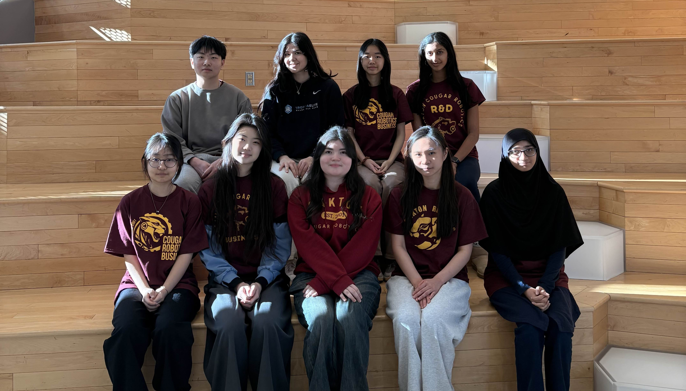

The business team is the behind the scenes group of our robotics team which founded by Aspen Harter in 2018. They are responsible for community outreach, sponsorships, engineering notebook, scouting, the official Oakton Cougar Robotics website, and social media. The business team members are on the team for both FTC and FRC. The Business team is much smaller than FTC & FRC but is beneficial to the success of the Oakton Cougar Robotics. They attend competitions and talk to other teams for possible collaborations for outreach events and scout for alliances. We are the head of the behind the scenes activity! The business team paves the way for FTC and FRC to succeed in competitions, financially, and popularity of this club.